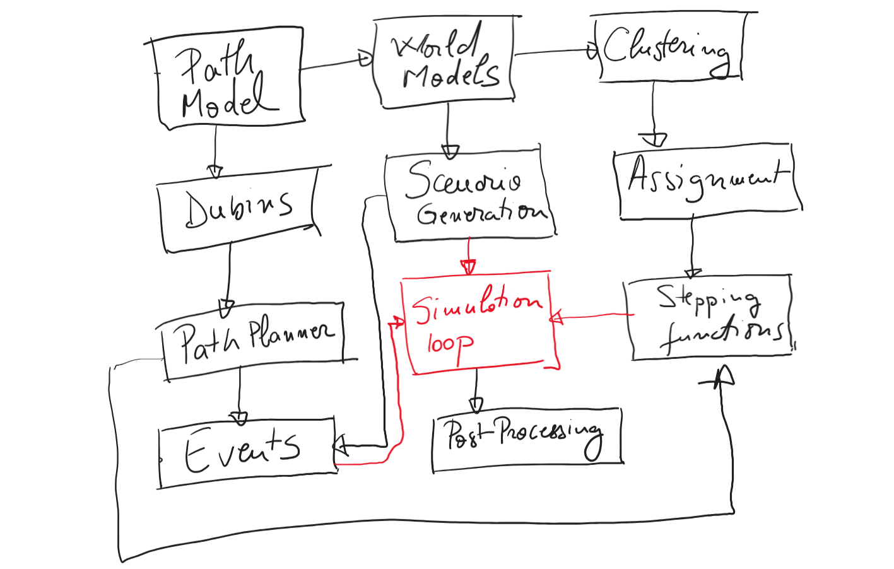

Architecture — Multi‑UAV Planner¶
Purpose: Describe package structure, main components, data model, runtime data flow, extension points, and engineering notes so contributors and integrators can quickly understand how the system is organized.
Overview (high level)¶
The project is organized into small focused modules with clearly separated responsibilities:
- Scene & state model — persistent simulation state and basic datatypes
- Scenario generation — randomized scenario creation (tasks, events, UAVs)
- Path primitives & Dubins utilities — geometric primitives and CS/CSC constructions
- Path planner — single‑UAV transit planning and mission‑coverage path generation
- Clustering & assignment — task clustering and UAV↔task matching (multiple algorithms)
- Simulation & stepping — time‑stepped execution, event handling, UAV motion integration
- Visualization — plotting and animation helpers (Matplotlib)
- Post‑processing — run logging, metrics, export, timing utilities
- Docs & CI — mkdocs‑based docs, tests, and deployment workflows
This separation keeps algorithms isolated from simulation bookkeeping and from visualization.
Top-level package layout (simplified)¶
src/multi_uav_planner/
path_model.py # Segment, LineSegment, CurveSegment, Path
world_models.py # Task, UAV, Event, World, Tolerances
scenario_generation.py # ScenarioConfig, generate_scenario
dubins.py # CS/CSC construction helpers
path_planner.py # plan_path_to_task, plan_mission_path
clustering.py # K-means clustering & cluster->UAV mapping
assignment.py # assignment algorithms (greedy, Hungarian, auction, SA)
stepping_fcts.py # move_in_transit, perform_task, pose_update, return_to_base
simulation_loop.py # simulate_mission (high-level loop)
post_processing.py # RunLog, metrics, exporters, timing helpers
visuals/ # plotting and animation utilities
docs/, tests/, examples/
Core data model¶
- Task (base) and specializations:
PointTask,LineTask,CircleTask,AreaTask-
Fields:
id,position=(x,y),state(0 unassigned / 1 assigned / 2 completed), optional heading enforcement, and task geometry fields. -
UAV
-
Fields:
id,position=(x,y,heading),speed,turn_radius(R),state(0 idle / 1 transit / 2 busy / 3 damaged),clustermembership,assigned_path,current_range,max_range. -
Path and segments
Pathis an ordered sequence ofSegmentobjects.LineSegment(start,end)— straight segment.CurveSegment(center,radius,theta_s,d_theta)— circular arc.- Arc length formula:
$$ L = R \cdot |\Delta\theta|. $$ -
Segment parameterization (where used) is by normalized $\(t \in [0,1]\)$.
-
Event
-
Scheduled events (NEW_TASK, UAV_DAMAGE) with
time,kind, andpayload. -
World
- Holds
tasks,uavs,base,time,events, tolerances, and partition sets:- Tasks:
unassigned,assigned,completed - UAVs:
idle_uavs,transit_uavs,busy_uavs,damaged_uavs
- Tasks:
Main runtime flow¶
- Scenario generation
-
ScenarioConfig→generate_scenario()→ returns data: initial tasks, uavs, events. -
World initialization
-
initialize_world(world, scenario)populates dicts, partitions, and events. -
Simulation loop (
simulate_mission) - Process scheduled events at current
world.time. - Optionally cluster tasks (PRBDD workflow).
- Run assignment (
assignment(world, algo)), computing costs and committing UAV→task assignments. - Advance transit UAVs (
move_in_transit→ usespose_update). - Advance busy UAVs performing task coverage (
perform_task→ usespose_update). - Record snapshots (RunLog) for visualization/metrics.
-
Repeat until
world.done()and UAVs returned to base (or abort on timeout/stall). -
Post‑processing
- Compute metrics from
RunLog: per‑UAV distances, state durations, task latencies, timeseries aggregates. - Export JSON/CSV reports.
Conceptual dataflow:
- scenario → world → simulate_mission
- events → world updates
- clustering → assignment
- assignment → path planner → uav.assigned_path
- stepping → pose updates → snapshots → post_processing
Path planning details¶
- Planner logic for transit to a task:
- If UAV co-located and heading ok → no move.
- If straight line is feasible (heading alignment) → straight
LineSegment. -
Otherwise:
- If final heading is unconstrained: compute shortest CS (
cs_segments_shortest). - If final heading constrained:
- Try CS candidates that end with a straight whose heading matches target.
- Fallback to shortest CSC (
csc_segments_shortest).
- If final heading is unconstrained: compute shortest CS (
-
Mission coverage paths per task:
PointTask→ empty path.LineTask→ singleLineSegmentalong requested heading.CircleTask→ full circular sweep (±2π) with center chosen so circle passes through task position.AreaTask→ boustrophedon passes with semicircular turns (turn radius = pass_spacing / 2).
Clustering & assignment¶
- Clustering
cluster_tasks_kmeans(tasks, K)performs K-means on task positions.-
assign_clusters_to_uavs_by_proximitybuilds squared-distance cost matrix between UAV positions and cluster centers and uses a greedy mapping. -
Assignment
-
assignment(world, algo)is the high-level driver:- Builds cost matrix (optionally Dubins-aware using
plan_path_to_task). - Runs chosen algorithm:
- Greedy global (
greedy_global_assign_int) - Hungarian (SciPy
linear_sum_assignment) - Auction (ε-auction)
- Simulated annealing (stochastic)
- Commits: updates
worldpartitions and setsuav.current_task,uav.assigned_path, and moves UAV ids between partition sets.
- Builds cost matrix (optionally Dubins-aware using
-
Cost semantics
- Costs are Euclidean distances or Dubins path lengths (planner invoked per UAV-task pair); Dubins computation is costlier and a candidate for caching.
Simulation stepping & motion model¶
pose_update(uav, dt, atol)consumes the first segment inuav.assigned_path:LineSegment: move forward bydistance = uav.speed * dt, interpolate along segment, clamp at end.CurveSegment: compute angular advanceΔθ = distance / radius, rotate the current position around the arc center by signed Δθ, update heading, clamp at arc end.- On segment completion, the caller pops the segment from the
Path. - When transit path finishes, UAV switches to busy and
plan_mission_pathcreates coverage segments. - Damage events and new tasks are handled by
check_for_events, which updatesworldand partitions.
Visualization & post‑processing¶
visuals.animation.animate_world:- Runs
simulate_missionwith aRunLoghook, then builds an animated Matplotlib visualization:- per‑UAV traces, icons, damage markers, task markers labeled
T{id}, distance text, time title.
- per‑UAV traces, icons, damage markers, task markers labeled
-
Uses blitting for performance.
-
post_processing: RunLogcaptures snapshots at configurable stages (e.g., after coverage).- Helpers compute:
- executed distances per UAV,
- planned path lengths,
- per‑UAV state durations,
- per‑task latencies (time assigned / time completed),
- time series aggregates.
- Export to JSON/CSV via
save_json/save_csv_rows.
Extension & integration points¶
- New task types
-
Add a Task subclass, implement
plan_mission_pathlogic, add plotting invisuals.plotting_world. -
New assignment algorithms
-
Update
assignment()to add new algorithm option; reusecompute_cost(). -
Performance
- Cache Dubins path lengths keyed by (uav_pose, task_pose, R).
- Batch or parallelize cost computations (process pool / thread pool).
-
Memoize repeated planner queries.
-
Visualization backends
- Replace Matplotlib functions with Plotly/Bokeh implementations; keep
RunLogas the stable snapshot interface.

Figure 1 — Module dependency diagram for Multi‑UAV Planner.